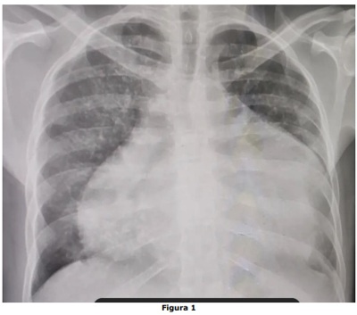

Questão 1 · Transtornos Somáticos · Transtorno dos Sintomas Somáticos · 4000183399Considerando a apresentação das demandas de saúde mental na atenção primária, assinale a alternativa correta.
A É comum que os pacientes relatem claramente suas queixas psíquicas.
B Aproximadamente um terço dos sintomas relatados pelos pacientes permanecerão sem explicação médica mesmo após investigação adequada, apresentando importante associação com sofrimento mental.
C É imprescindível descartar primeira e exaustivamente todas as possibilidades orgânicas para apenas posteriormente pensar nos aspectos psicossociais.
D Devem ser prontamente encaminhadas para avaliação na atenção especializada.
Questão 2 · Fobia Social ou Transtorno de Ansiedade Social · 4000183398– Para pacientes com presença de sintomas físicos e ansiedade de desempenho antes de apresentações em público, pode-se orientar como forma de enfrentamento:
A Uso imediato de benzodiazepínico, independentemente da intensidade dos sintomas e idade do paciente.
B Respiração diafragmática e relaxamento muscular.
C Afastamento dessas situações.
D Introdução de antipsicóticos contínuos em baixas doses.
Questão 3 · Reumatologia · Gota · 4000183397Analise as assertivas abaixo relacionadas à gota: I. Embora existam diversos fatores relacionados com sua etiologia, há reduzida excreção renal do ácido úrico na grande maioria dos pacientes, podendo também estar relacionada à hiperprodução e/ou a defeitos enzimáticos no metabolismo das purinas. II. A gota tofácea crônica é a apresentação tardia da doença na forma de artropatia crônica, por vezes poliarticular e simétrica, com predomínio em membros superiores, à semelhança da artrite reumatoide. III. Pode haver crise de artrite gotosa com medidas normais de ácido úrico sérico, e a maioria das pessoas com hiperuricemia nunca terá um episódio clínico resultante do seu aumento. Quais estão corretas?
A Apenas I e II.
B Apenas I e III.
C Apenas II e III.
D I, II e III.
Questão 4 · Insônia · 4000183396Analise as assertivas abaixo relacionadas aos transtornos do sono: I. Os quadros de insônia são mais frequentes em homens e têm predisposição familiar. II. O tratamento deve ser iniciado por medidas não farmacológicas (higiene do sono). III. Deve-se considerar a síndrome obstrutiva do sono em casos de sonolência excessiva diurna. Quais estão corretas?
A Apenas I e II.
B Apenas I e III.
C Apenas II e III.
D I, II e III.
Questão 5 · Antidepressivos · 4000183395Em relação à disfunção sexual associada ao uso de Inibidores Seletivos da Recaptação da Serotonina (ISRS): I. Causam anorgasmia em mulheres e aumentam a latência para ejaculação em homens. II. Causam redução da libido em homens, mas raramente afeta a libido em mulheres. III. A prevalência pode chegar a 50% dos casos e deve ser prontamente manejado. Quais estão corretas?
A Apenas I e II.
B Apenas I e III.
C Apenas II e III.
D I, II e III
Questão 6 · Medicina Preventiva · 4000183394NÃO faz parte da lista nacional de notificação compulsória de doenças, agravos e eventos da saúde pública:
A Bartonelose.
B Leptospirose.
C Febre amarela.
D Raiva humana.
Questão 7 · Inf ectologia · 4000183393Analise as seguintes assertivas em relação à dengue: I. A prova do laço deve ser realizada na ausência de sangramento espontâneo. II. O resultado da prova do laço é positivo se houver a presença de 20 ou mais petéquias em adultos, no local de pressão ou abaixo, em uma área de 2,5 cm². III. As seguintes alterações laboratoriais são encontradas: leucocitose e linfopenia com atopia linfocitária. Quais estão corretas?
A Apenas I e II.
B Apenas I e III.
C Apenas II e III.
D I, II e III.
Questão 8 · Estratif icação do risco cardiovascular global e metas terapêuticas · Cardiologia · 4000183392Em relação à prevenção clínica das doenças cardiovasculares, pode-se afirmar que:
A A intensidade das intervenções preventivas raramente pode ser determinada pela estimativa do risco cardiovascular para cada paciente pelas inúmeras variáveis de cada indivíduo.
B Indivíduos com idade maior que 75 anos têm menor risco basal para doença cardiovascular e, portanto, sem benefício absoluto de receber intervenções preventivas.
C Em pacientes hipertensos, o uso de anti-hipertensivos reduz o risco de eventos cardiovasculares, independentemente da história pregressa de doença cardiovascular.
D O uso de estatina em prevenção primária é ineficaz na redução de eventos cardiovasculares maiores, mortalidade geral e acidente vascular cerebral não fatal.
Questão 9 · Medicina Preventiva · 4000183391A prevenção quaternária é definida como a ação feita para: I. Identificar um paciente ou população em risco de supermedicalização. II. Proteger pacientes de uma intervenção médica invasiva. III. Sugerir procedimentos científica e eticamente aceitáveis. Quais estão corretas?
A Apenas I e II.
B Apenas I e III.
C Apenas II e III.
D I, II e III.
Questão 10 · Inf ectologia · 4000183390São exames que podem ser utilizados para confirmar tuberculose pulmonar ativa em pessoas com quadro clínico sugestivo da doença: I. Teste rápido molecular para tuberculose (TRM-TB). II. Cultura de III. Teste de Mantoux. Quais estão corretos?
A Apenas I e II.
B Apenas I e III.
C Apenas II e III.
D I, II e III.
Questão 11 · Medicina Preventiva · 4000183389Assinale a alternativa correta em relação ao cuidado domiciliar e Visita Domiciliar (VD).
A A VD como “meio” tem objetivos específicos de atuação na Atenção Domiciliar terapêutica e visita a pessoas restritas ao domicílio, temporária ou permanentemente.
B A VD como “fim” não se restringe à busca ativa de pacientes, mas, em especial, para dar conta da demanda reprimida, da vigilância em saúde relacionada aos programas prioritários.
C A VD não é exclusiva da unidade básica de saúde, uma vez que constitui importante recurso a ser utilizado por qualquer estabelecimento de saúde, desde que se faça necessário.
D Devem-se criar fluxos que envolvam somente a equipe médica na avaliação das solicitações de VD e definir conceitos e critérios para inclusão e alta dos pacientes em atendimento.
Questão 12 · Medicina Preventiva · 4000183388Idoso com diabete melito, hipertensão arterial e dislipidemia internou por crise hipertensiva e hiperglicemia. Na alta hospitalar, foi orientado para acompanhamento na Unidade Básica de Saúde (UBS). No seu primeiro atendimento, o médico de família ajustou as medicações e organizou as prescrições de diferentes pro ssionais. O paciente foi encaminhado para a oftalmologia e à nutricionista da rede, além de programar a realização de novos exames e o controle da pressão arterial. Qual dos atributos da Atenção Primária à Saúde abaixo está
A Longitudinalidade.
B Orientação familiar.
C Coordenação do cuidado.
D Equidade da atenção.
Questão 13 · Medicina Preventiva · 4000183387Os problemas de saúde de uma população são de diversas naturezas e afetam todos os órgãos e sistemas. Coexistem doenças crônicas, violência e acidentes, problemas de saúde mental, doenças agudas e infectocontagiosas. Analise as seguintes assertivas em relação à Atenção Primária à Saúde: I. A integralidade, um atributo da atenção primária, é a capacidade de identi car o conjunto dos problemas de saúde dos pacientes e lidar com esses problemas, seja tratando, na maioria das situações, ou referindo, quando é do âmbito da atenção secundária ou terciária. II. Quando os médicos que atuam na atenção primária acompanham as pessoas ao longo do tempo, há maior familiaridade com os pacientes e seus problemas, há maior precisão diagnóstica, é utilizada acertadamente menos medicação, e é maior a proporção de pessoas com tratamentos completados. III. Os estudos de demanda em ambulatórios gerais demonstram que, embora seja ampla a variedade de problemas de saúde, existem alguns problemas muito frequentes, responsáveis por cerca da metade de toda a demanda trazida pela população. Quais estão corretas?
A Apenas I e II.
B Apenas I e III.
C Apenas II e III.
D I, II e III.
Questão 14 · Medicina Preventiva · 4000183386Um pesquisador está testando um novo medicamento que genuinamente funciona para um determinado desfecho, porém, como resultado em seu estudo, não encontra qualquer efeito bené co dessa medicação com o desfecho estudado, perdendo uma oportunidade de descoberta. O que aconteceu?
A Confusão.
B Causalidade reversa.
C Erro tipo I.
D Erro tipo II.
Revisar: possível letra faltando em enunciado
Questão 15 · Medicina Preventiva · 4000183385A fama do rock e do pop está associada à tomada de risco, uso de substâncias e mortalidade prematura. Um estudo publicado em 2012 na BMJ Open examinou as relações entre fama e mortalidade prematura e, dentre outros objetivos, se a causa da morte estava ligada a experiências adversas na infância. O estudo incluiu 1.489 estrelas do rock e pop que alcançaram a fama entre 1956 e 2006. O estudo identi cou data de nascimento e examinou os fatores de risco e proteção para a mortalidade prematura da amostra estudada. Foram coletadas informações disponíveis por meio de publicações biográ cas, notícias e outras coberturas da mídia. Foi identi cado o status de sobrevivência de cada indivíduo em 20 de fevereiro de 2012. O estudo concluiu que a mortalidade das estrelas do rock/pop aumenta em relação à população geral com o tempo desde a fama. Os aumentos são maiores em estrelas norte-americanas e em carreiras solo. Dado o exposto acima, qual é o delineamento do referido estudo?
A Transversal.
B Coorte retrospectivo.
C Ecológico.
D Caso-controle.
Revisar: possível letra faltando em enunciado
Questão 16 · Medicina Preventiva · 4000183384O logotipo da Cochrane (Figura) ilustra um “forest plot” (ou gráfico em oresta), que representa o potencial das revisões sistemáticas para melhorar os cuidados de saúde. Este gráfico mostra os resultados resumidos de uma revisão sistemática icônica cujo título é “ Considerando a leitura do gráfico do logotipo, pode-se inferir que:

A A administração de corticosteroides a mulheres que estão prestes a dar à luz prematuramente é benéfica para o recém-nascido.
B A administração de corticosteroides a mulheres que estão prestes a dar à luz prematuramente é um risco para o recém-nascido.
C A administração de corticosteroides a mulheres que estão prestes a dar à luz prematuramente não tem impacto para o recém-nascido.
D A análise do gráfico não permite que se chegue a alguma conclusão sobre o resultado do estudo.
Questão 17 · Medicina Preventiva · 4000183383Considerando as normas deontológicas do Código de Ética Médica nº 2.217/2018, é vedado ao médico: I. Praticar ou indicar atos médicos desnecessários ou proibidos pela legislação vigente no país. II. Assumir condutas contrárias a movimentos legítimos da categoria médica com a finalidade de obter vantagens. III. Divulgar informações sobre assuntos médicos de forma sensacionalista, promocional ou de conteúdo inverídico. IV. Divulgar, fora do meio cientí co, processo de tratamento ou descoberta cujo valor ainda não esteja expressamente reconhecido cientificamente por órgão competente. Quais estão corretas?
A Apenas I.
B Apenas IV.
C Apenas II e III.
D I, II, III e IV.
Revisar: possível letra faltando em enunciado
Questão 18 · Medicina Preventiva · 4000183382Entre os anos de 2015 e 2020, diversos estudos de caso-controle foram realizados a m de definir a influência do sedentarismo sobre o risco de Infarto Agudo do Miocárdio (IAM). Os resultados de Odds Ratio (OR) com seus respectivos intervalos de con ança a 95% (IC95%) são apresentados abaixo. A indicação de que o sedentarismo seria fator de risco significativo para IAM encontra-se em:
A OR 0,6 IC95% (0,3-0,8).
B OR 0,8 IC95% (0,5-1,1).
C OR 1,8 IC95% (1,2-2,7).
D OR 2,5 IC95% (0,9-4,1).
Questão 19 · Medicina Preventiva · 4000183381A Figura 4 abaixo apresenta a distribuição da variável renda familiar de uma determinada amostra. As linhas indicadas “a” e “b” representam, respectivamente:
A Variabilidade e mediana.
B Média e mediana.
C Média e variabilidade.
D Mediana e média.
Questão 20 · Medicina Preventiva · 4000183380Considerando que os resultados de um determinado estudo sejam verdadeiros, um clínico gostaria de saber se esses resultados poderiam ser aplicados aos seus pacientes. Dentre as alternativas abaixo, de que dependeria essa extrapolação?
A Da presença de viés.
B Da validade externa.
C Do delineamento.
D Não é possível fazer essa extrapolação
Questão 21 · Psiquiatria Inf antil · Diagnóstico do Autismo · Transtorno do Espectro Autista TEA · 4000183379Menino de 10 anos apresenta di culdades na escola, com muita di culdade na socialização, di culdades motoras, baixa tolerância à frustração, tendo bastante di culdade em entender as solicitações da professora, não interagindo bem com os colegas, com relatos de sofrer bullying por seu jeito estranho. Apresenta habilidades com números, bastante perfeccionista, apaga muitas vezes suas escritas e chora se não cam como gostaria. Em relação ao caso descrito, assinale a alternativa correta.
A Necessita de avaliação especializada multidisciplinar, sala de recursos, além de treinamento de habilidades sociais.
B É um quadro bastante típico nessa faixa etária, sendo a conduta adequada no manejo do caso o afastamento de suas atividades escolares.
C É um quadro clássico de superdotação, altas habilidades e necessita de avaliação psiquiátrica
D Seus comportamentos acontecem por falta de limites, não necessitando avaliações especializadas.
Questão 22 · Psiquiatria Inf antil · Transtornos Ansiosos · 4000183378Sobre transtornos ansiosos na infância e na adolescência, analise as assertivas abaixo: I. São pouco comuns e facilmente identificáveis. II. O transtorno de ansiedade de separação e fobias específicas comumente se desenvolvem na infância. III. Considerando o impacto social na funcionalidade e desenvolvimento de outros transtornos mentais, a Atenção Básica tem papel central no reconhecimento precoce desses quadros. Quais estão corretas?
A Apenas I.
B Apenas II.
C Apenas II e III.
D I, II e III.
Questão 23 · Pediatria · Gráf icos OMS Classif icação nutricional · 4000183377O perímetro cefálico aumenta no primeiro trimestre de vida, na criança hígida nascida a termo, em cm/mês:
A 0,5.
B 1.
C 1,5.
D 2.
Questão 24 · Classif icação das Epilepsias · Neurologia · 4000183376Quanto às convulsões no período neonatal, pode-se afirmar que:
A A síndrome de Lennox-Gastaut é uma causa frequente.
B A encefalopatia hipóxico-isquêmica é uma causa frequente.
C O tratamento com fenitoína é contraindicado.
D O tratamento com fenobarbital é contraindicado.
Questão 25 · Inf ectologia · 4000183375Considerando as particularidades do choque séptico, analise as assertivas a seguir: I. O seu substrato fisiopatológico envolve componentes distributivos, hipovolêmicos e cardiogênicos. II. O componente distributivo é o responsável pela fase hiperdinâmica inicial e pelos sinais clínicos precoces. III. O tratamento é determinado pela evolução. Inicia com expansão volumétrica, necessitando frequentemente suporte hemodinâmico medicamentoso. Quais estão corretas?
A Apenas I e II.
B Apenas I e III.
C Apenas II e III.
D I, II e III.
Questão 26 · Pediatria · Puericultura Geral · 4000183374Considerando a atenção à saúde do escolar, analise as assertivas abaixo e assinale V, se verdadeiras, ou F, se falsas. ( ) A ecopediatria estuda a influência dos fatores ambientais sobre o crescimento e o desenvolvimento da criança e do adolescente e desperta para compreender os ecossistemas. ( ) As principais causas de internação entre crianças e adolescentes por acidentes são as quedas e as queimaduras. ( ) O Programa Nacional de Alimentação Escolar é destinado a promover a segurança alimentar e nutricional dos estudantes das escolas públicas e privadas brasileiras. A ordem correta de preenchimento dos parênteses, de cima para baixo, é:
A V – V – F.
B F – V – V.
C F – F – V.
D V – F – F.
Questão 27 · Tratamento · Pediatria · 4000183373Considerando o tratamento antimicrobiano da infecção do trato urinário em crianças, assinale a alternativa correta em relação à via de administração parenteral.
A É a indicada nas infecções recorrentes.
B É a indicada em recém-nascidos e lactentes jovens.
C É a indicada nas crianças que têm febre.
D É a indicada nas crianças que têm alteração da função renal.
Questão 28 · Inf ectologia · 4000183372Em relação à sepse em crianças, analise as assertivas abaixo: I. É mais comumente ocasionada por infecções bacterianas. II. Na prática clínica, objetivam-se, durante o tratamento, níveis séricos de glicose abaixo de 180 mg/dL. III. Hidrocortisona tem indicação para tratar a inflamação ocasionada pela reação de defesa à agressão pela infecção. Quais estão corretas?
A Apenas I.
B Apenas I e II.
C Apenas II e III.
D I, II e III.
Questão 29 · Dengue · Inf ectologia · 4000183371Analise as asserções a seguir e a relação proposta entre elas para caso suspeito de dengue em área de risco. I. Pode ser considerado caso suspeito em criança com quadro febril agudo sem outras manifestações, usualmente entre dois e sete dias de duração e sem foco de infecção aparente. PORQUE II. A dengue em crianças pode se manifestar com a presença de febre e ausência de outros sinais clínicos. A respeito dessas asserções, assinale a alternativa correta.
A As asserções I e II são proposições verdadeiras, e a II é uma justificativa da I.
B As asserções I e II são proposições verdadeiras, mas a II não é uma justificativa da I.
C A asserção I é uma proposição verdadeira, e a II é uma proposição falsa.
D As asserções I e II são proposições falsas
Questão 30 · Diagnóstico da anemia f erropriva · 4000183370Paciente do sexo masculino, 1 ano e 7 meses, foi amamentado no peito até os dois meses, recebendo, após esta idade, leite de vaca. Nunca fez uso de ferro complementar e, ao exame físico, apresenta palidez palmar importante. Foi levantada a hipótese diagnóstica de anemia ferropriva e solicitado hemograma. Nesse caso, espera-se encontrar no hemograma:
A Macrocitose, hipercromia, ferritina elevada e RDW (
B Microcitose, hipocromia, ferritina baixa e RDW elevado.
C Microcitose, hipocromia, ferritina baixa e RDW baixo.
D Macrocitose, hipercromia, ferritina elevada e RDW elevado.
Questão 31 · Pediatria · Diagnóstico Nutricional · 4000183369Paciente do sexo feminino, de 1 ano e 10 meses, apresenta 13,5 Kg de peso e IMC de 17,6. Considerando essas medidas isoladas, colocadas nos gráficos da Caderneta da Criança na Figura 3 abaixo (pontos azuis), você a classifica como apresentando peso ________ para a idade e IMC _________. Assinale a alternativa que preenche, correta e respectivamente, as lacunas do trecho acima.

A adequado – com risco de sobrepeso
B elevado – adequado
C adequado – adequado
D elevado – com risco de sobrepeso
Questão 32 · Pediatria · Puericultura Geral · 4000183368Qual das orientações de puericultura está correta?
A A posição prona é a recomendada para o recém-nascido como forma de prevenção da morte súbita na infância.
B Para crianças abaixo dos dois anos de idade, a exposição às telas (celulares, tablets, computadores etc.) deve ser limitada a uma hora por dia.
C O andador é um equipamento desaconselhado para acelerar o processo da marcha em crianças.
D O início do uso de pasta de dentes em crianças é indicado a partir dos dois anos de idade.
Questão 33 · Inf ectologia · 4000183367Pré-escolar de 2 anos é trazido à consulta no pronto-socorro em estado pós-ictal de crise convulsiva tônico-clônica generalizada, duração breve, primeiro episódio, sem história familiar de epilepsia. História rápida coletada com familiares evidencia febre alta não aferida há 24h e cefaleia importante há 18h, estado vacinal desatualizado para vacinas bacterianas encapsuladas. Ao exame, presença de sinal de Kernig e Brudzinski, hipotenso, tempo de enchimento capilar de 1,5 segundos e lesões purpúricas em tronco e membros. Sobre esse caso, são feitas as seguintes considerações: I. O germe mais prevalente associado ao quadro é Neisseria meningitidis, bactéria encapsulada imunoprevenível. II. É comum os seguintes achados no exame do líquido cefalorraquidiano deste paciente: pleocitose neutrofílica, hipoglicorraquia, hipoproteinorraquia e bacterioscopia com diplococos grampositivos. III. A hipótese diagnóstica inicial é de meningococcemia com meningite, doença imunoprevenível de mortalidade associada principalmente à coagulação intravascular disseminada. Quais estão corretas?
A Apenas I e II.
B Apenas I e III.
C Apenas II e III.
D I, II e III.
Questão 34 · Pediatria · Tratamento da Crise Aguda · 4000183366Adolescente de 12 anos, do sexo masculino, obeso, asmático em tratamento irregular da intercrise, chega na emergência com tosse seca, tempo expiratório prolongado, sem sibilância e afebril. Sua saturação de oxigênio é de 90% em ar ambiente, está bradipneico, e a gasometria arterial evidencia acidose respiratória. O tratamento inicial nesse caso é:
A Intubação traqueal após sequência rápida com quetamina.
B Nebulização inicial com Salbutamol e magnésio intravenoso.
C Salbutamol inalado contínuo e ventilação não invasiva confortável.
D Salbutamol e metilprednisolona, ambos intravenosos.
Questão 35 · Plano C · Choque em Pediatria · 4000183365Lactente de 18 meses chega na emergência, pois, desde a noite passada, está mais prostrado, aceitou pouco a janta e vomitou logo em seguida. Está há 3 dias com evacuações líquidas 4-5 vezes ao dia sem restos patológicos, e febrícula 2 picos ao dia. Ao exame, está taquicárdico, normotenso, GLASGOW de 10, desidratado grave com dé cit perfusional importante. Consultou no início dos sintomas e, como estava hidratado, foi liberado apenas com soro oral e sintomáticos. Em relação a esse caso, é correto afirmar que:
A A hipopotassemia, caso presente, se justifica pela diarreia aguda.
B O diagnóstico é de choque séptico e deve-se iniciar expansão volêmica cristaloide, com soro fisiológico melhor que ringer lactato.
C O estado neurológico na admissão indica intubação traqueal para permeabilizar via aérea.
D A pressão arterial e o lactato sérico normais afastam choque séptico nesse caso, classificando a situação clínica como sepse grave.
Questão 36 · Endocrinologia · 4000183364Em relação à cetoacidose diabética na criança com idade inferior a 5 anos, existe maior risco de:
A Estado hiperosmolar hiperglicêmico na admissão.
B Edema cerebral após 12 horas do início do tratamento.
C Rebaixamento de sensório e piora da cefaleia no início do tratamento.
D Acidemia metabólica hiperclorêmica com normonatremia inicial.
Questão 37 · Of talmologia · 4000183363Ao examinar um recém-nascido a termo do sexo masculino, percebe-se que ele apresenta diâmetro corneano do olho direito aumentado, ausência de reflexo vermelho ipsilateral e epífora sem secreção. O provável diagnóstico é:
A Dacriocistite.
B Retinoblastoma.
C Glaucoma congênito.
D Conjuntivite gonocócica.
Questão 38 · Mães adequadamente tratadas · 4000183362Primigesta com 38 semanas de idade gestacional é admitida no Centro Obstétrico. Realizou seis consultas pré-natais e não apresenta histórico de doenças prévias. Com 14 semanas de idade gestacional, apresentou VDRL de 1:64, tendo recebido três doses de Penicilina Benzatina, 2.400.000UI, com intervalo de uma semana entre cada dose. Parceiro não tratou sí lis por ter VDRL não reagente. Com 30 semanas de idade gestacional, apresentou título de VDRL de 1:16. Na admissão apresentava título de VDRL de 1:8. O parto foi vaginal e o recém-nascido (RN) é assintomático ao exame físico. Nesse caso, é correto presumir que se trata de mãe com sífilis:
A Adequadamente tratada. Solicitar VDRL em sangue periférico para o RN. Indicado tratamento para o RN com penicilina cristalina se exame reagente para qualquer titulação.
B Adequadamente tratada. Solicitar VDRL em sangue periférico para o RN. Indicado tratamento com penicilina cristalina para o RN se exame reagente com titulação pelo menos 2X maior que a materna.
C Inadequadamente tratada. Solicitar VDRL em sangue periférico para o RN. Indicado tratamento com penicilina cristalina para o RN se exame reagente com titulação pelo menos 4X maior que a materna.
D Inadequadamente tratada. Deve-se solicitar VDRL em sangue periférico para o RN, Raio-X ossos longos e coleta de líquor com pesquisa de VDRL. Indicado tratamento com penicilina cristalina para o RN com exame reagente para qualquer titulação.
Questão 39 · Sindrome Turner · Pediatria · 4000183361Recém-nascida apresenta edema importante de pés, pescoço alado, hipertelorismo mamário e 4º metacarpo curto. A síndrome mais provável é a de:
A Turner.
B Noonan.
C Down.
D Treacher Collins.
Questão 40 · Hipoglicemia · 4000183360Recém-nascido com 39 semanas de idade gestacional, lho de mãe diabética com controle glicêmico inadequado na gestação, apresenta glicemia capilar (HGT), com 2 horas de vida, de 34 mg/dl e está clinicamente assintomático. A melhor conduta para esse caso é: ______________, pois se trata de _____________________. Assinale a alternativa que preenche, correta e respectivamente, as lacunas do trecho acima.
A tranquilizar a família – hipoglicemia transitória do neonato
B incentivar o aleitamento materno em livre demanda – hipoglicemia transitória do neonato
C prescrever dextrose gel 40% 0,5 ml/kg na mucosa oral e repetir HGT em 30 minutos – hipoglicemia assintomática
D prescrever SG 10% 2 ml/kg intravenoso em infusão rápida e repetir HGT ao término – hipoglicemia assintomática
Questão 41 · Transtorno do Humor Bipolar THB · Diagnóstico do Transtorno do Humor Bipolar THB · 4000183359Transtorno do Humor Bipolar Tipo 1 Mulher de 30 anos procurou atendimento na UBS por insistência da família. Iniciou o uso de uoxetina 20 mg/dia há três semanas por sentir-se muito triste, com redução do apetite e isolamento social. Nos últimos dias, apresentou sensação de “estar ligada na tomada”, reduziu a necessidade de sono, realizou gastos abusivos e apresentou comportamento sexual de risco. A conduta mais adequada nesse caso é:
A Aumentar a dose do antidepressivo de forma gradual e iniciar um benzodiazepínico à noite.
B Trocar para um antidepressivo dual.
C Trocar por um antidepressivo com perfil mais sedativo.
D Suspender gradualmente o antidepressivo e iniciar um estabilizador do humor.
Questão 42 · Diagnóstico e Exames Complementares · Modif icações f isiológicas · Ginecologia · 4000183358São achados em uma paciente no período final da transição menopausal:
A Amenorreia >60 dias e <12 meses, hormônio estimulante do folículo (FSH) >25 UI/l, hormônio antimülleriano (AMH) baixo e inibina B baixa e contagem de folículos antrais baixa.
B Amenorreia >45 dias e <12 meses, FSH >15 UI/l, AMH baixo e inibina B baixa e contagem de folículos antrais muito baixa.
C Amenorreia >45 dias e <6 meses, FSH >20 UI/l, AMH muito baixo e inibina B baixa e contagem de folículos antrais baixa.
D Amenorreia >60 dias e <12 meses, FSH >20 UI/l, AMH baixo e inibina B baixa e contagem de folículos antrais muito baixa.
Questão 43 · Medicina Preventiva · 4000183357Na passagem do plantão das 8:00 em 13/05/2022, o residente da ginecologia do primeiro ano, que estava na noite, informou: “só tem uma paciente com doença inflamatória pélvica que recebi da cirurgia, ela já iniciou antibiótico”; depois disso saiu, pois estava atrasado para o round da outra equipe. O médico que recebeu o plantão reviu o prontuário. O primeiro registro médico foi do residente da cirurgia, que havia escrito: “Em 10/05/2022, a paciente teve 39ºC de febre associada à dor em baixo ventre, cuja intensidade era 8 em 10. Em 12/05/2022, realizou uma tomogra a abdominal total que descrevia um apêndice cecal normal e sinais de salpingite à esquerda, não visualizando o ovário esquerdo. Os exames laboratoriais de 12/05/2022: hCG=negativo | hmg=11,9 | leuc=21670 | PCR=180. Conforme contato com o plantonista da ginecologia, trans ro a paciente para os cuidados da equipe da emergência ginecológica. Prescrevo ceftriaxona, doxiciclina e metronidazol para a paciente, e solicito exames laboratoriais para infecções sexualmente transmissíveis. R1 CIG Miró Data: 12/05/2022 21:17”. Após essas anotações, não havia outros registros médicos. Considerando as atividades pro ssionais con abilizadoras essenciais para a prática médica na passagem do plantão, os aspectos do registro médico descrito no código de ética médica e a conduta do médico plantonista sobre o caso acima, podemos afirmar que a:
A Passagem do plantão apresenta comportamento de pré-confiabilidade.
B Atitude da passagem de plantão do plantonista da noite para o plantonista da manhã estava adequada quanto à comunicação efetiva com o colega de profissão.
C Evolução do residente da cirurgia está de acordo com o código de ética médica, no que tange ao Art. 87 §1.
D Prescrição dos antimicrobianos está de acordo com as recomendações para o tratamento do caso de doença inflamatória pélvica.
Questão 44 · Abortamento habitual Abortamento de repetição e insuf iciência istmocervical · Obstetrícia · 4000183356Analise as assertivas abaixo sobre a insuficiência istmocervical: I. Ocorre dilatação indolor e recorrente do colo uterino, levando a perdas no primeiro trimestre. II. É idiopática, decorrente da fraqueza estrutural do colo. III. É secundária a procedimentos cirúrgicos como dilatação e curetagem. Quais estão corretas?
A Apenas I e II.
B Apenas I e III.
C Apenas II e III.
D I, II e III.
Questão 45 · Fisiopatologia · 4000183355Analise as assertivas abaixo que sustentam a hipótese de que existe uma relação causal entre a presença de endometriose e a infertilidade: I. Há um aumento da taxa de fecundidade mensal e da taxa cumulativa de gravidez, após a remoção cirúrgica de endometriose mínima a leve. II. Há uma taxa de implantação reduzida por embrião após fertilização in vitro em mulheres com endometriose, quando comparadas a mulheres com infertilidade por fator tubário. III. Cistos ovarianos endometrióticos afetam negativamente a taxa de ovulação espontânea. Quais estão corretas?
A Apenas I.
B Apenas II.
C Apenas II e III.
D I, II e III.
Questão 46 · Métodos hormonais combinados · Anticoncepção hormonal apenas com progesterona · 4000183354Entre as progestinas abaixo, qual a que necessita ser bioativada para se ligar diretamente a receptor de progesterona?
A Levonorgestrel.
B Noretindrona.
C Desogestrel.
D Drospirenona.
Questão 47 · Ginecologia · Regimes terapêuticos · Urogenitais · 4000183353Paciente menopáusica de 51 anos vem à consulta com queixa de falta de lubri cação vaginal, associada a uma sensação de queimação na região genital após as relações. Ela já usou lubri cantes à base de vaselina, mas não teve melhora. Ela nega sintomas vasomotores ou cirurgias prévias. Ela tem uma mamogra a recente, resultado: BIRADS 1. O residente discutiu o caso com o preceptor e ambos decidiram prescrever uma dose de creme vaginal com 0,5 g de estrogênio, duas a três vezes por semana. O residente escreveu como usar o creme vaginal para a paciente e falou: “qualquer menometrorragia deveria ser investigada pela equipe”. Sobre o caso descrito, é correto afirmar que:
A A dose de estrogênio vaginal não necessita o uso de progestina concomitante, mas o alerta do residente não demonstrou um comportamento de confiabilidade.
B A abordagem do caso está correta em todos os seus aspectos. A segurança endometrial foi confirmada no uso de estrogênio vaginal até 1 ano, por isso, a fala do aluno para a paciente apresentou um comportamento de confiabilidade.
C A utilização do creme vaginal deveria ser substituída por estrogênio sistêmico, uma vez que existe a necessidade da aplicação diária de estrogênio vaginal, o que reduziria a adesão ao tratamento.
D Pelo fato de a paciente ter útero, o uso de progestinas por via oral está indicado concomitantemente com o uso do creme vaginal com estrogênio, uma vez que a dose prescrita é considerada como média.
Questão 48 · Ginecologia · Diagnóstico · Investigação etiológica · 4000183352Paciente de 23 anos, gesta 2, para 2, veio na unidade básica de saúde com uma queixa de amenorreia secundária. Após ter um hCG sanguíneo negativo, o residente da ginecologia avaliou a paciente. O único aspecto relevante na história era uma cefaleia central, que não alterava as suas atividades diárias. A paciente negava uso de medicamentos. No exame físico, a avaliação sumária da visão sugeria uma redução da visão periférica. A palpação da tireoide era normal. As mamas apresentavam galactorreia bilateral espontânea. Na discussão do caso com a equipe, aventouse a possibilidade de hiperprolactinemia. Consideraram solicitar prolactina, FSH, LH, TSH, ressonância magnética da sela túrcica, a avaliação com oftalmologia e o teste da progesterona. Todavia, houve um debate sobre quais exames iniciais deveriam ser solicitados. A opção que segue uma investigação paulatina, baseada na hipótese diagnóstica considerada, deve iniciar com:
A A dosagem do TSH e da prolactina.
B A dosagem do TSH, prolactina, FSH e LH. Se normais, solicitar a ressonância magnética e a consultoria com a oftalmologia.
C O teste da progesterona. Se for negativo, dosar FSH, LH. Se forem normais, solicitar o TSH e a prolactina; se o TSH for normal e a prolactina acima de 100 ng/ml, solicitar a ressonância magnética. A consultoria com a oftalmologia deveria ser feita, caso a ressonância fosse normal.
D A dosagem de TSH. Se anormal, deve seguir com a dosagem da prolactina. Se a prolactina estiver entre 20 e 40 pg/ml, então, solicitar a ressonância magnética.
Questão 49 · Síndrome de Morris · DDS46XYinsensibilidade androgênica ou def eito no receptor androgênico · 4000183351Ginecologia Uma paciente de 23 anos que apresenta a síndrome da insensibilidade aos androgênios na sua forma mais completa apresentará:
A Uma doença ligada ao cromossomo Y, com uma genitália infantil.
B Mamas em estágio M3 de Tanner e pelos pubianos no estágio P5.
C Alterações müllerianas, como útero unicorno.
D A produção do hormônio antimülleriano pelas células de Sertoli.
Questão 50 · FSH e estradiol · Ginecologia · FSHLH · 4000183350Uma paciente de 35 anos deseja verificar a sua reserva ovariana para planejar a sua gestação. Ela tem ciclos menstruais regulares de 28 dias, com duração de 3 dias. O médico solicitou estradiol na fase secretora (dia 20 do ciclo), FSH (no dia 3 do ciclo) e LH (no dia 13 do ciclo), para realizar a relação FSH/LH. O resultado do FSH foi 5,7 mUI/ml, o do LH foi 1,4 mUI/ml e o do estradiol foi de 30 pg/ml. Em relação à conduta do médico, é correto afirmar que:
A Ele deveria ter pedido o hormônio antimülleriano, que é produzido pelas células da granulosa dos folículos pré- antrais, por isso, deve ser solicitado na primeira fase do ciclo menstrual, entre os dias 1 e 5.
B A relação FSH/LH é acima de 3,6. Essa relação, baseada nos dias da coleta, revela que a paciente terá uma má resposta à indução ovariana.
C O valor do estradiol coletado na fase secretora, associado com o valor do FSH na fase folicular inicial, revela que a paciente terá uma boa resposta ovariana.
D Dos três testes solicitados, somente um exame foi solicitado na época correta e está dentro da normalidade para a idade.
Questão 51 · Rastreamento mamográf ico · 4000183349Sobre as formas de rastreamento do câncer de mama, é correto afirmar que:
A O Autoexame Mensal da Mama (AEM) ainda é recomendado. Apesar das poucas evidências, o AEM demonstrou melhorar a sobrevida das pacientes.
B A maioria dos grupos de especialistas recomenda a tomada de decisão compartilhada em relação à triagem com mamografia para as mulheres na faixa etária de 40 a 49 anos.
C A ressonância magnética da mama deve ser anual, a partir dos 50 anos, para mulheres com BRCA positivo.
D Tomografia por emissão de pósitrons e Ki-67, um marcador tumoral sérico, são formas promissoras para o rastreamento do câncer de mama.
Questão 52 · Avaliação pré operatória · 4000183348Uma paciente de 65 anos, sem outras queixas, exceto sangramento vaginal, foi submetida à biópsia de endométrio, a qual evidenciou um carcinoma endometrial. Ela não apresentava sinais ou sintomas urinários ou gastrointestinais. No exame físico, o colo uterino estava liso, sem lesões macroscópicas, o útero era móvel, sem massas retrouterinas. Os ligamentos cardinais não estavam comprometidos. Na avaliação pré-tratamento do carcinoma endometrial, o médico deve realizar as seguintes ações, EXCETO:
A Palpar os linfonodos na região inguinal.
B Dosar CA 125 no sangue.
C Solicitar Raio-X de tórax.
D Solicitar colonoscopia.
Questão 53 · Colposcopia · 4000183347São achados colposcópicos que sugerem câncer invasor do colo uterino: I. Vasos sanguíneos no formato de saca-rolhas. II. Contorno irregular da superfície com perda do epitélio superficial. III. Alteração do tom da cor do colo uterino, diferente do rosado. Quais estão corretos?
A Apenas I e II.
B Apenas I e III.
C Apenas II e III.
D I, II e III.
Questão 54 · Trabalho de parto prematuro TPP · Obstetrícia · 4000183346São tocolíticos utilizados para prolongar a gestação: I. β 2-agonistas. II. Inibidores da ciclo-oxigenase. III. Sulfato de magnésio. Quais estão corretos?
A Apenas I e II.
B Apenas I e III.
C Apenas II e III.
D I, II e III.
Questão 55 · Distúrbios hipertensivos na gestação DHEG · Obstetrícia · 4000183345São cuidados específicos na administração de sulfato de magnésio na pré-eclâmpsia: I. Deve-se manter o sulfato de magnésio durante 24 horas após a resolução da gestação, ou após a última crise convulsiva. II. A concentração do íon magnésio plasmático de 12 mEq/L referencia um reflexo patelar abolido e não parada respiratória. III. Deve-se interromper a infusão do sulfato de magnésio se a creatinina sérica for maior que 1 mg/dL. Quais estão corretos?
A Apenas I.
B Apenas II.
C Apenas I e III.
D I, II e III.
Questão 56 · Obstetrícia · Alteração do volume de líquido amniótico ILA · 4000183344A causa mais comum de polidrâmnio é:
A Devido a malformações do sistema digestivo.
B Devido a malformações cardíacas.
C Por hidropsia fetal não imune.
D Idiopática.
Questão 57 · Obstetrícia · Alteração do volume de líquido amniótico ILA · 4000183343O índice de líquido amniótico é considerado como “oligoâminio” quando o seu valor está:
A Menor que 5.
B Entre 5 e 8.
C Entre 9 e 10.
D Entre 11 e 12.
Questão 58 · Dopplervelocimetria Doppler · Avaliação da vitalidade f etal · Obstetrícia · 4000183342O aumento do pico sistólico da artéria cerebral média, na avaliação da anemia fetal, se deve por:
A Vasoconstrição periférica.
B Diminuição do retorno venoso.
C Diminuição da viscosidade sanguínea.
D Diminuição da contratilidade miocárdica.
Questão 59 · Restrição de crescimento f etal RCF · Obstetrícia · 4000183341Para um feto entre o 3º e o 10º percentil de crescimento, que não apresenta comprometimento da vitalidade, o momento ideal da interrupção da gestação será:
A Antes da 37ª semana.
B Entre a 37ª e 38ª semanas.
C Entre a 38ª e 39ª semanas.
D A partir da 39ª semana.
Questão 60 · Cardiologia · 4000183340Qual das causas abaixo apresenta alto risco de mortalidade na grávida com cardiopatia (25 a 50%)?
A Doença pulmonar ou tricúspide.
B Hipertensão pulmonar.
C Prolapso da valva mitral.
D Estenose mitral leve/moderada.
Questão 61 · Escala de Coma de Glasgow · Escala de Coma de Glasgow · Neurologia · 4000183339Qual dos seguintes componentes da escala de GLASGOW é a mais preditiva de desfechos neurológicos?
A Abertura ocular.
B Resposta verbal.
C Resposta motora.
D Lucidez.
Questão 62 · Tratamento · Cirurgia · Estratégias para controle de hemorragia · 4000183338A primeira e principal forma de controlar hemorragia em um membro traumatizado é:
A O uso de torniquete.
B A compressão do local da hemorragia.
C O uso de calças pressurizadas.
D A elevação do membro traumatizado.
Questão 63 · Escala de Coma de Glasgow · Neurologia · 4000183337Paciente politraumatizado com trauma cranioencefálico, ao exame físico, responde verbalmente de forma não compreensiva, abre os olhos apenas em resposta à dor, mas consegue localizar a fonte da dor. Qual a classificação GLASGOW desse paciente?
A 7.
B 8.
C 9.
D 10.
Questão 64 · Classif icação do choque hemorrágico · Cirurgia · 4000183336Paciente politraumatizado, hipotenso, com os seguintes dados: FC: 135 batimentos por minuto; FRL: 30 movimentos ventilatórios por minuto; débito urinário: 10 ml/hr. Considerando essas informações, qual a perda de volume sanguíneo que o paciente sofreu?
A 15% do volume sanguíneo total.
B 25% do volume sanguíneo total.
C 35% do volume sanguíneo total.
D 45% do volume sanguíneo total.
Questão 65 · Trauma Abdominal Fechado · Cirurgia · 4000183335Adolescente de 14 anos, após queda de bicicleta, foi encaminhado ao pronto-socorro. Durante exame físico, o médico emergencista percebe que o paciente apresenta dor em ombro esquerdo após palpação de hipocôndrio esquerdo. Sobre esse achado semiológico, é correto afirmar que é:
A Sinal de Kehr, associado a hemoperitôneo por lesão esplênica.
B Sinal de Danfort, associado a hemoperitôneo.
C Sinal de Torres-Homem, associado a trauma hepático.
D Sinal de Aaron, associado à lesão esplênica.
Questão 66 · Exames Complementares Básicos · Cardiologia · 4000183334Homem com 53 anos, fumante e hipertenso, será submetido à correção de hérnia inguinal videolaparoscópica. Quais exames pré-operatórios devem ser realizados nesse paciente?
A Hemograma.
B Hemograma e Raio-X de tórax (Ap + perfil).
C Hemograma, Raio-X de tórax (Ap + perfil) e eletrocardiograma.
D Proteína C-reativa.
Questão 67 · Conceitos Básicos e Complicações em Cirurgia Laparoscópica · Cirurgia · 4000183333Considerando as alterações sistêmicas causadas pelo pneumoperitôneo na cirurgia videolaparoscópica, analise as assertivas abaixo: I. Ocorre elevação do diafragma e, dessa forma, necessita-se de pressões maiores para ventilar o paciente. II. Ocorre diminuição do débito cardíaco. III. A principal arritmia relacionada ao pneumoperitôneo em cirurgia videolaparoscópica é a bradicardia. Quais estão corretas?
A Apenas I.
B Apenas I e II.
C Apenas II e III.
D I, II e III.
Questão 68 · Anatomia da Vesícula e Via Biliar · Cirurgia · 4000183332Sobre anatomia da via biliar, é correto afirmar que:
A Trígono de Calot é delimitado pelo ducto colédoco, ducto hepático comum e ducto cístico.
B A artéria cística comumente é ramo da artéria hepática esquerda.
C A artéria cística comumente não é identificada durante uma colecistectomia videolaparoscópica.
D Um marco anatômico utilizado para identificar a artéria cística é o linfonodo de Mascagni.
Questão 69 · Cirurgia · Neoplasia Colorretal · 4000183331Paciente de 75 anos com quadro de dor abdominal há cinco dias evoluiu com distensão abdominal e timpanismo à percussão. Qual o diagnóstico mais provável?
A Apendicite aguda.
B Neoplasia de cólon perfurada.
C Diverticulite aguda.
D Pancreatite aguda.
Questão 70 · Fístulas Intestinais · Cirurgia · 4000183330Assinale a alternativa abaixo que descreve uma fístula com bom prognóstico para fechamento espontâneo.
A Fístula de duodeno com obstrução distal.
B Fístula de jejuno com obstrução distal.
C Fístula de jejuno com trajeto longo.
D Fístula de duodeno com trajeto longo.
Questão 71 · Cirurgia Plástica · Cirurgia · Curativos Especiais · 4000183329São efeitos do curativo a vácuo, EXCETO:
A Manutenção da umidade e redução do edema da ferida.
B Remodelamento tecidual que favorece a cicatrização.
C Diminuição do fluxo sanguíneo e consequentemente diminuição da resposta inflamatória.
D Redução da carga bacteriana.
Questão 72 · Classif icação de ChildPugh · 4000183328A classificação de Child-Pugh é utilizada rotineiramente para avaliação de insu ciência hepática. Sobre ela, pode-se a rmar que:
A É dividida em quatro grupos (A até D) e seus valores variam entre 0 e 15.
B Não leva em consideração alterações clínicas como encefalopatia.
C Albumina é um dos critérios laboratoriais, e é considerada normal acima de 3,5 gramas por decilitro.
D Hiperbilirrubinemia é um fator independente para alta pontuação na classificação.
Questão 73 · Cirurgia · O f ígado anatomia e histologia · 4000183327m relação à anatomia hepática e biliar, é correto afirmar que:
A O fígado é dividido em lobo direito e esquerdo pelo ligamento falciforme e subdivido em 7 segmentos, denominados segmentos de Couinaud.
B O segmento I é também chamado de lobo quadrado.
C A veia porta é formada pelas veias mesentérica inferior e esplênica e corresponde a 75% da vascularização hepática.
D Os linfonodos encontrados no hilo hepático correspondem ao grupamento 12 e podem ser divididos em anterior e posterior.
Questão 74 · Doença Diverticular · Cirurgia · 4000183326Em relação à doença diverticular dos cólons, é INCORRETO afirmar que:
A Divertículos são protusões anormais da parede do cólon, geralmente relacionadas à interação entre aumento da pressão intra-abdominal, alterações de motilidade intestinal, alterações da estrutura colônica e dietas pobres em fibras.
B Divertículos ocorrem em áreas de fraqueza da parede do cólon, relacionadas a pequenas arteríolas, as quais penetram a camada muscular.
C Um pseudodivertículo é aquele que envolve em sua protusão todas as camadas do cólon.
D O sigmoide e cólon descendente são as regiões mais comumente acometidas.
Questão 75 · Apendicite Aguda · Inf ectologia · Apendicite Aguda · 4000183325Durante a apendicectomia por diagnóstico de apendicite aguda, pode-se realizar coleta de material encontrado para isolamento bacteriológico. Dos patógenos abaixo, assinale aquele que dificilmente será encontrado.
A Streptococcus viridans.
B Escherichia coli.
C Bacteroides fragilis.
D Candida albicans.
Questão 76 · Divertículo de Meckel · Divertículo de Meckel · Cirurgia · 4000183324O divertículo de Meckel é uma anormalidade anatômica que pode ser encontrada em meio cirúrgico; em relação a ele, pode-se afirmar que:
A É a anormalidade anatômica mais comumente encontrada, estando presente em aproximadamente 12% da população.
B Geralmente é localizado na borda mesentérica e em jejuno proximal.
C A maioria dos divertículos são benignos e diagnosticados acidentalmente em autópsias, laparotomias exploradoras ou exames contrastados.
D O tratamento do divertículo de Meckel é acompanhamento clínico, e sua cirurgia de ressecção dificilmente é realizada.
Questão 77 · Síndromes Pósgastrectomia · 4000183323Levando em consideração a incidência do refluxo alcalino em nosso meio, é INCORRETO afirmar que:
A Após gastrectomias parciais, refluxo biliar é comum.
B A maioria dos pacientes que apresentam essa patologia foram submetidos a gastrectomias parciais, sendo feita a reconstrução do tipo Billroth II.
C Todos os pacientes com refluxo alcalino serão sintomáticos durante o processo.
D Em pacientes que não respondem ao tratamento clínico, a conversão para reconstrução do tipo Y-de-Roux não é uma opção.
Questão 78 · Classif icação de Johnson · 4000183322A doença ulcerosa péptica é uma patologia relativamente comum na população. Conforme a classificação modi cada de Johnson, temos como correto:
A As lesões ulcerosas localizadas em região pré-pilórica são classificadas como tipo IV, e estão associadas à normocloridria.
B As lesões ulcerosas localizadas em região de pequena curvatura são classificadas como tipo I e estão associadas com hipocloridria.
C As lesões ulcerosas tipo V ocorrem somente próximo à cárdia e estão associadas ao uso de anti-inflamatórios não esteroidais.
D As lesões ulcerosas localizadas em grande curvatura são classificadas como tipo IV e estão associadas à hipercloridria.
Questão 79 · Fatores de Risco para Cicatrização Anormal · Cirurgia · 4000183321Em relação aos fatores que influenciam negativamente o processo cicatricial, podemos citar, EXCETO:
A Drogas exógenas.
B Desnutrição.
C Deficiência de vitamina A, C e D.
D Infecção.
Questão 80 · Fases da Cicatrização · Cirurgia · 4000183320Em relação à cicatrização tecidual e suas fases, assinale a alternativa INCORRETA.
A Durante a fase inflamatória, há predomínio do colágeno tipo I e, após, durante as demais fases, observamos um pico do colágeno tipo III.
B O processo de cicatrização é composto por três fases, sendo a segunda fase nomeada como proliferativa.
C Durante a fase inflamatória, primeira fase do processo cicatricial, há um aumento da permeabilidade vascular.
D Neutrófilos e macrófagos são predominantes na fase inflamatória.
Questão 81 · Psiquiatria Inf antil · Psiquiatria · 4000183319Analise as assertivas abaixo referentes à vulnerabilidade e ao adoecimento mental: I. Cerca de 75% dos transtornos mentais diagnosticados na vida adulta iniciam antes dos 24 anos. II. A maioria dos transtornos mentais tem suas raízes na infância, podendo o ambiente abrandar ou agravar a expressão do adoecimento. III. É provável que a genética e o ambiente, em suas múltiplas possibilidades de apresentações e associações, sejam corresponsáveis pela saúde mental de um indivíduo. Quais estão corretas?
A Apenas I.
B Apenas I e III.
C Apenas II e III.
D I, II e III.
Questão 82 · Transtornos do Humor · Psiquiatria · 4000183318nalise as assertivas abaixo referentes à saúde mental: I. O sofrimento mental é uma linha contínua que vai desde manifestações normais da vida, como a tristeza, até extremos de anedonia, desânimo e tentativas de suicídio. II. A intensidade do sofrimento, o prejuízo provocado e a persistência dos sintomas são considerados, porém não necessariamente diferenciam o normal do patológico. III. A divisão dos diagnósticos em categorias, com separações estabelecidas, é compatível com as queixas apresentadas pelos pacientes. Quais estão corretas?
A Apenas I e II.
B Apenas I e III.
C Apenas II e III.
D I, II e III.
Questão 83 · Choque · 4000183317Analise as assertivas abaixo e assinale V, se verdadeiras, ou F, se falsas. ( ) A principal característica do choque é a hipoperfusão, e não um nível específico de pressão sanguínea arterial sistêmica. ( ) O vasopressor de escolha para início da ressuscitação é a epinefrina. ( ) A antibioticoterapia deve ser iniciada após estabilização do paciente. ( ) Para pacientes com nível sérico de lactato elevado, a terapêutica deve ser direcionada para redução desse marcador. A ordem correta de preenchimento dos parênteses, de cima para baixo, é:
A F – V – V – F.
B V – F – F – V.
C V – V – F – F.
D F – F – V – V.
Questão 84 · Neoplasias Testiculares · Cirurgia · 4000183316Paciente do sexo masculino de 18 anos consulta por aumento de volume na região escrotal. Tem histórico de criptorquidia. Ultrassom evidenciou massa hipoecogênica testicular, sugestiva de neoplasia de testículo. Sobre o assunto, analise as assertivas abaixo: I. É o tumor sólido mais curável, com taxa de sobrevida superior a 95% em 10 anos. II. Os marcadores tumorais utilizados para diagnóstico e acompanhamento são o beta HCG e a alfafetoproteína. III. Os sobreviventes ao tratamento com quimioterapia e radioterapia têm um risco aumentado para o desenvolvimento de neoplasias hematológicas no futuro. Quais estão corretas?
A Apenas I e II.
B Apenas I e III.
C Apenas II e III.
D I, II e III.
Questão 85 · Reumatologia · Espondilite Anquilosante · 4000183315A doença reumática que evolui com acometimento de coluna, simétrica e contínua (também chamada “coluna em cana de bambu”), além das articulações sacroilíacas, é:
A Espondilite anquilosante.
B Artrite reumatoide.
C Osteoartrite.
D Artrite psoriática.
Questão 86 · Quadro clínico da anemia megaloblástica · Gastrectomias · 4000183314Paciente com histórico de obesidade mórbida no passado, submetido a tratamento cirúrgico da obesidade com gástrico há seis anos, vem à consulta com quadro de fraqueza, mal-estar e parestesias em membros inferiores. Sobre esse quadro, analise as assertivas abaixo: I. A deficiência de cobalamina é comum em pacientes em pós-operatório de cirurgia de by-pass gástrico. II. A absorção da cobalamina ca comprometida pelas alterações que a cirurgia de by-pass gástrico provoca na ação das proteínas R e do fator intrínseco que auxiliam na absorção junto ao delgado. III. No longo prazo, a de ciência de cobalamina pode causar desmielinização, causando anomalias cerebrais e degeneração da medula espinhal. Quais estão corretas?
A Apenas I e II.
B Apenas I e III.
C Apenas II e III.
D I, II e III.
Revisar: possível letra faltando em enunciado
Questão 87 · Tabagismo · Doença Pulmonar Obstrutiva Crônica DPOC · Pneumologia · 4000183313Paciente tabagista de longa data (fumou uma média de 30 cigarros por dia durante 40 anos) realiza espirometria que demonstra VEF1<50% do previsto. Sobre esse caso, analise as assertivas abaixo: I. A carga tabágica desse paciente é 60 maços-ano. II. O uso de broncodilatadores de ação prolongada nesse paciente reduziria em cerca de 20% a chance de exacerbação do DPOC em um ano. III. Corticoide inalatório em associação com compararmos com o uso de Quais estão corretas?
A Apenas I e II.
B Apenas I e III.
C Apenas II e III.
D I, II e III.
Questão 88 · Inf ectologia · Síf ilis · Diagnóstico · 4000183312Em relação à sífilis, analise as assertivas abaixo: I. Testes sorológicos lipoidais positivos com títulos 1:4 confirmam o diagnóstico de sífilis. II. Os testes treponêmicos utilizados para confirmar testes lipoidais reagentes têm um valor preditivo positivo bastante elevado para o diagnóstico de sífilis. III. A penicilina B benzatina, quando utilizada em altas doses, pode ser usada para o tratamento de neurossífilis. Quais estão corretas?
A Apenas I.
B Apenas II.
C Apenas III.
D I, II e III.
Questão 89 · Endocrinologia · 4000183311Paciente de 68 anos, diabética, utiliza insulina há seis anos para controle da doença. Está fazendo episódios frequentes de hipoglicemia, mesmo com a redução da dose da insulina. Assinale a alternativa que apresenta o exame cuja dosagem pode auxiliar na diferenciação entre excesso de insulina por produção endógena ou por administração de dose excessiva.
A Insulina sérica.
B Peptídeo C.
C Glicemia de jejum.
D Glucagon.
Questão 90 · Suporte Básico de Vida · Cardiologia · 4000183310Homem de 76 anos chega à emergência desacordado. Ao avaliá-lo, percebe-se que é portador de marca-passo unicameral por histórico de bloqueio átrio ventricular total prévio e está em parada cardiorrespiratória por brilação ventricular. Assinale a alternativa adequada para o atendimento desse paciente.
A Manejar com massagem cardíaca, sendo contraindicada desfibrilação pelo fato de o paciente ser portador de marca-passo.
B Utilizar antiarrítmicos por via parenteral como primeira medicação durante a reanimação desse paciente pelo fato de não ser possível a desfibrilação elétrica.
C Proceder à desfibrilação, independentemente da presença de marca-passo prévio.
D Encaminhar o paciente ao cateterismo cardíaco de urgência, antes de qualquer manobra de reanimação, visto que a causa provável da fibrilação ventricular é infarto do miocárdio.
Questão 91 · Hematúria · Nef rologia · Hematúria · 4000183309Na investigação de um paciente com hematúria microscópica e suspeita de lesão glomerular, qual tipo de cilindros espera- se encontrar no exame de urina?
A Hemáticos.
B Hialinos.
C Granulosos pigmentados.
D Leucocitários.
Questão 92 · Inf ectologia · 4000183308Relacione a Coluna 1 à Coluna 2, associando os antimicrobianos às suas propriedades farmacológicas Coluna 1 1. Sua atividade está relacionada ao seu pico sérico, ou seja, quanto maior a concentração da droga mais rápido e maior o efeito bactericida. 2. Sua atividade é dita tempo-dependente, ou seja, o fator mais importante para a morte bacteriana é o tempo de exposição do microrganismo ao fármaco. Coluna 2 ( ) Gentamicina. ( ) Azitromicina. ( ) Ciprofloxacino. ( ) Piperacilina + Tazobactam. ( ) Meropenem. A ordem correta de preenchimento dos parênteses, de cima para baixo, é:
A 2 – 1 – 1 – 1 – 2.
B 1 – 1 – 2 – 2 – 1.
C 1 – 2 – 1 – 2 – 2.
D 2 – 2 – 2 – 1 – 1.
Questão 93 · Enxaqueca · Neurologia · 4000183307Analise a Figura 2 abaixo vista em um ambiente iluminado: São situações clínicas em que podemos encontrar essa imagem pupilar: I. Herniação do lobo temporal por sangramento intracraniano. II. Enxaqueca. III. Compressão do nervo oculomotor por tumor cerebral. Quais estão corretas?
A Apenas I e II.
B Apenas I e III.
C Apenas II e III.
D I, II e III.
Questão 94 · Endocrinologia · 4000183306Mulher de 48 anos notou abaulamento na região frontal do pescoço. Ecogra a local mostrou nódulo de tireoide com 1,2 cm de diâmetro e o TSH sérico está diminuído. Qual a melhor conduta para elucidação diagnóstica?
A Biópsia aspirativa por agulha fina.
B Varredura da tireoide com radionuclídeos para confirmar nódulo “quente”.
C Verificar títulos de anticorpos antitireoidianos para descartar tireoidite autoimune.
D Repetir dosagem de TSH e ecografia em 3 meses.
Questão 95 · Outros Exames Laboratoriais · Etiologia · Critérios Diagnósticos · 4000183305Paciente de 58 anos vem à emergência por quadro de dor e distensão abdominal, náuseas e vômitos há 3 dias. Associado, relata icterícia de escleras, colúria e acolia. Os exames evidenciaram amilase 850 U/L (Valor de Referência – VR até 100 U/L) e hiperbilirrubinemia às custas de bilirrubina direta. Além disso, ALT 126 U/L (alanina aminotransferase – VR 40 U/L) e AST 82 U/L (aspartato aminotransferase – VR 40 U/L). Sobre o caso, analise as assertivas abaixo: I. Nova dosagem de amilase sérica em 2400 U/L dois dias após é indicativo de mau prognóstico. II. Lesão na cabeça do pâncreas pode ser diagnosticada neste caso com a tomogra a computadorizada do abdome, e, dentre os diagnósticos diferenciais, devemos considerar pancreatite autoimune por IgG4. III. Elevações dos níveis de ALT (alanina aminotransferase) superior a 3 vezes o valor de referência sugere cálculo biliar como causa da pancreatite. Quais estão corretas?
A Apenas I e II.
B Apenas I e III.
C Apenas II e III.
D I, II e III.
Questão 96 · Porf iria intermitente aguda · 4000183304Qual das alternativas abaixo apresenta quadro clínico compatível com crise aguda de porfiria?
A Homem, 35 anos, episódios frequentes de quadros depressivos e psicose crônica, com várias idas à emergência e histórico de tentativas de suicídio.
B Mulher, 28 anos, episódios recorrentes de dor abdominal, lombossacra, glúteo e coxas, necessitando de opioides para alívio; exame físico abdominal é normal, podendo ter associado hipertensão, taquicardia e vômitos.
C Mulher, 62 anos, episódios recorrentes de diarreia e dor abdominal, com leucocitose e marcadores inflamatórios aumentados quando dosados no momento da crise aguda.
D Homem, 48 anos, quadro de dor torácica com características anginosas, alterações eletrocardiográficas sugestivas de isquemia miocárdica e cateterismo cardíaco evidenciando coronárias normais.
Questão 97 · Cardiologia · Quadro clínico · 4000183303Homem de 79 anos, com quadro progressivo de cansaço e mal-estar progressivos há algumas semanas, procura atendimento. Ao examiná-lo, a pressão arterial é 85/60 mmhg, a ausculta cardíaca apresenta bulhas hipofonéticas, há distensão das veias jugulares, e o Raio-X do tórax está apresentado pela Figura 1 abaixo. Os achados descritos são compatíveis com:

A Pneumonia Viral.
B Tamponamento cardíaco.
C Embolia Pulmonar.
D Infarto Agudo do Miocárdio.
Questão 98 · Tratamento · Fisiopatologia · Síndrome de GuillainBarré · 4000183302Em relação à Síndrome de Guillain-Barré, é correto afirmar que:
A Na maioria dos pacientes, os sintomas iniciam alguns dias após uma infecção viral, como zikavírus, vírus entéricos ou Covid-19.
B As mulheres são mais acometidas do que os homens.
C O diagnóstico é feito baseado na análise do líquor, em que há um aumento na celularidade com redução no nível de proteínas.
D O tratamento pode ser feito com plasmaférese, imunoglobulina intravenosa ou glicocorticoides em altas doses, todos com boa resposta na melhora dos sintomas, mesmo sendo utilizados isoladamente.
Questão 99 · Imunização passiva · Def inição · 4000183301Calendário dos Centros de Ref erência para Imunobiológicos especiais CRIEs Sobre vacinas e imunizações, analise as assertivas abaixo: I. A imunização ativa ocorre após a administração de um toxoide no organismo, levando o corpo a produzir uma resposta imune contra o agente infeccioso. II. As globulinas imunes são feitas a partir de plasma de doadores com níveis elevados de anticorpos para antígenos específicos, o que chamamos de imunização passiva. III. As vacinas recomendadas para pacientes com plano de esplenectomia são as que cobrem germes encapsulados (pneumococo, meningococo e Haemophilus tipo b), idealmente até duas semanas antes da cirurgia. Quais estão corretas?
A Apenas I e II.
B Apenas I e III.
C Apenas II e III.
D I, II e III.
Questão 100 · Dengue · Inf ectologia · 4000183300Em relação à dengue, analise as assertivas abaixo: I. É uma doença infecciosa febril aguda, que pode se apresentar de forma benigna ou grave, dependendo de alguns fatores, entre eles: o vírus envolvido, infecção anterior pelo vírus da dengue e fatores individuais como doenças crônicas (diabetes, asma brônquica, anemia falciforme). II. A doença é transmitida pela picada do macho do mosquito Aedes aegypti. Não há transmissão pelo contato direto com um doente ou suas secreções, nem por meio de fontes de água ou alimento. III. Existe uma proporção de casos que têm a infecção subclínica, ou seja, são expostos à picada infectante do mosquito Aedes aegypti, mas não apresentam a doença clinicamente, embora quem imunes ao sorotipo com o qual se infectaram; isso ocorre com 20 a 50% das pessoas infectadas. Quais estão corretas? Respostas: 1 12 23 34 45 56 67 78 89 100
A Apenas I e II.
B Apenas I e III.
C Apenas II e III.
D I, II e III.